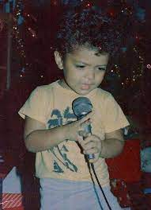
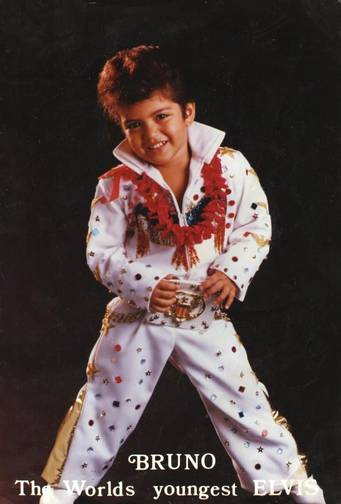

Bruno Mars, nacido como Peter Gene Hernández en 1985 en Honolulu, Hawái, es un cantante y compositor de origen puertorriqueño y filipino. Desde una edad temprana, mostró interés por la música, actuando en el escenario con su familia en shows locales. A los 17 años se mudó a Los Ángeles para seguir su sueño de convertirse en artista, y después de años de esfuerzo, logró firmar un contrato discográfico. Su estilo único, que mezcla pop, funk, soul y R&B, lo ha convertido en uno de los artistas más destacados de la última década.
Hasta 2024, Bruno Mars ha lanzado los siguientes álbumes:
Algunas de sus canciones más premiadas incluyen:
Bruno Mars está actualmente de gira con su álbum 'An Evening with Silk Sonic'. Algunas canciones que interpreta son:
¡Compra boletos para su próximo concierto aquí!
Su color favorito es el púrpura, y es conocido por su estilo ecléctico que mezcla géneros como pop, funk, R&B y soul.
Además, solía imitar a Elvis Presley cuando era niño en su natal Hawái.
¡Haz clic para ver a Bruno Mars en sus inicios!
Bruno Mars ha colaborado con artistas como: